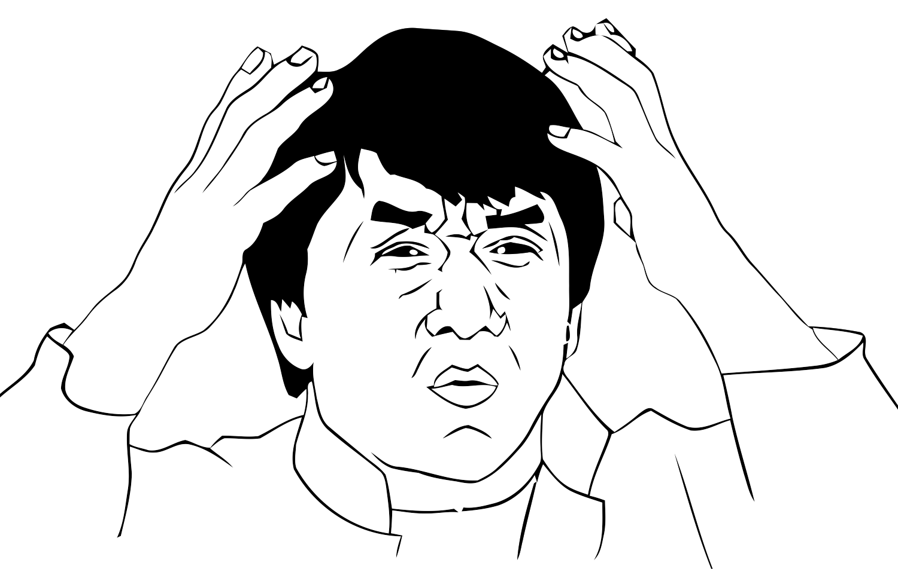
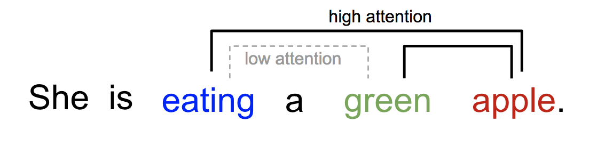

Introduction to Transformers
"Attention is all you need"
Presented by Sylvain Verdy
Table of contents
- Words Embeddings
- BERT (Bidirectional Encoder Representations from Transformers)
- LSTM Architecture
- Seq-2-Seq Architecture
- Attention mechanism explained
-
Transformer Architecture
- Positional encoding
- Encoder layers
- Scale dot product attention
- Decoder layers
Words Embeddings:
Word2Vec
Combined by two techniques (Cbow and Skip Gram)
Skip-Gram:
Learn words representation by training a neural network to predict the context from a word.
Use context window parameters to predict context of target word. For example, choose the word "royal", and choose a size of the window (size=2). We have to keep t-2 words and t+2. Words used in the context are: ["is", "the", "king"].
SKIP GRAM Architecture
SKIP GRAM demonstration
BERT (Bidirectional Encoder Representations from Transformers)
First of the famous transformers models. Trained on 2.5 Billion of words (Wikipedia) and other 800 millions words of a corpus.
LSTM architecture
Seq-2-Seq Architecture
Attention mechanism explained
Integrate attention into Seq-2-Seq Architecture
Attention module
Attention for what?
- Help to memorize long sequence of sentences.
Transformer Architecture
"Attention is all you need" (Vaswani, et al., 2017)
Transformer
Positional encoding
- Coding position of words to add information into the model.
- Positional encoding is summed with the embedding output.

Encoder Layers
Scale dot product attention
Multi Head Attention
Multi-headed attention allows the model to jointly process information from different representation subspaces at different positions.
Position-wise fully connected feed-forward network
Decoder layers
First bloc multi head attention
Cannot use the rest of the sentence to predict next token.
Token "am" can't use "fine" to predict the next token, so it based only on the previous token("start, I, am")
Masked Scores
Avoid tokens to predict from futur tokens of the sentence.
Decoding animation
Demo GPT-2
Thanks, have any questions?